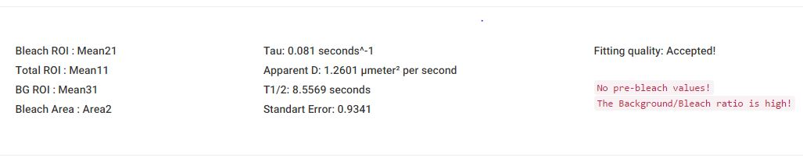

Fluorescence Recovery After Photobleaching (FRAP) was introduced in the 1970s to measure rates of lateral transport of proteins and lipids in cell membranes based on fluorescence recovery at bleached sites[1]. Whereas in the beginning FRAP was primarily used to study diffusion in cell membranes, the substantial progress in developing fluorescent molecules with advanced properties coupled with modern microscope technology, provide the key for an increasing use for visualization, tracking and quantification of molecular interactions and mobility in a spatio-temporal manner in living cells[1a, 2]. Today, FRAP stands for a commonly well-established biophysical tool to study a huge variety of cellular aspects, e.g. vesicle transport, protein recycling, protein and lipid mobility, cell adhesion, cytoskeletal dynamics and signal transduction. Generally fluorescent molecules are susceptible to photobleaching, which, depending on the used excitation light intensities, leads to the fading of the fluorescent signal over time.
FRAP includes the irreversible bleaching of emitted light from fluorescently tagged molecules by a short high intensity laser pulse in a defined region of interest (ROI), followed by monitoring the fluorescence recovery in time-lapse microscopy using low intensity laser excitation.[3] The recovery of fluorescence occurs as a result of the diffusional exchange between bleached and unbleached molecules, based on Adolf Fick’s diffusion law. Final FRAP results provide information about the kinetics during molecular assemblies such as half time of recovery (t1/2), apparent diffusion coefficient (D(t) or D), binding rate constants (kon or koff), and mobile fractions (Mf), based on various mathematical models.
{kind=link}
Schematic illustration of the FRAP technique performed with a green fluorescent cell. During the the initial (Pre-Bleach) step, a cell expressing fluorescently tagged molecules is shortly excited in a defined region of interest (ROI) using low intensity laser excitation. The resulting fluorescence signal (IPre) drops to a particular low value (I0) after irreversible bleaching of emitted light of the fluorochromes by a short high intensity laser pulse in the ROI. The signal recovers from the so called post-bleach intensity (I0) to a maximal plateau value (I∞) over time. Based on the achieved results parameters like halftime of recovery (t1/2), the mobile fraction (Mf) and the immobile fraction (IMf) can be calculated. Furthermore the apparent diffusion constant (D) and the binding dynamics (kon and koff) of the fluorescently tagged molecules can be determined from the recovery curve (from I0 to I∞).
The halftime (t1/2) of recovery
The time from the bleach to the timepoint where the fluorescence intensity (I) reaches the half (I1/2) of the final recovered intensity (IE). I0 is the low value intensity after irreversible bleaching in the region of interest (ROI).
I1/2 = (Ie+I0)/2
I1/2 = (Ie+I0)/2
Apparent diffusion coefficient (ADC) / Diffusion coefficient (D)
The quantity which characterizes the diffusion of a particular substance (e.g. molecules or proteins) thus provides information how long it takes e.g. for a fluorescent protein to move in a specific environment. The units of D are length2 / time, usually expressed in µm2 / sec.
D = 0.224 * ω²/t1/2.
Diffusion coefficient D, with ω being the radius of the bleached area and t1/2 the half-time of fluorescence recovery. This equation assumes a Gaussian profile for the bleach and diffusion to occur only laterally, in 2D.
D = 0.224 * ω²/t1/2.
Diffusion coefficient D, with ω being the radius of the bleached area and t1/2 the half-time of fluorescence recovery. This equation assumes a Gaussian profile for the bleach and diffusion to occur only laterally, in 2D.
Mobile fraction (Mf)
The fraction of fluorescent molecules that can participate in the diffusional exchange between bleached and unbleached molecules.
Mf = (Ie-Io)/(Ipre-Io)
Ie is the final recovered intensity, Io the low value intensity after irreversible bleaching and Ipre determines the Pre-Bleach intensity.
Mf = (Ie-Io)/(Ipre-Io)
Ie is the final recovered intensity, Io the low value intensity after irreversible bleaching and Ipre determines the Pre-Bleach intensity.
Immobile fraction (IMf)
The fraction of molecules that cannot exchange between bleached and nonbleached regions.
IMf = 1-MF
Mf is the mobile fraction of molecules.
IMf = 1-MF
Mf is the mobile fraction of molecules.
Diffusion time
The time required e.g. for a fluorescent protein to diffuse across the bleach spot in the absence of any binding sites. In that cellular compartment, the diffusion time is proportional to the area of the bleach spot divided by the diffusion constant.
Recovery time
The length of time after bleaching required for the fluorescence intensity to reach a constant value (Plateau).
Protein-Protein interaction
Binding reactions to mobile or immobile obstacles e.g. other proteins, influence the dynamics of proteins, which are described by a binding constant kon and a dissociation constant koff.
On rate: is the rate of the forward binding reaction in which a protein binds to a binding site to form a bound complex.
Off rate: is the rate of the reverse unbinding reaction in which a protein is released from its binding site.
On rate: is the rate of the forward binding reaction in which a protein binds to a binding site to form a bound complex.
Off rate: is the rate of the reverse unbinding reaction in which a protein is released from its binding site.
[1] aD. Axelrod, D. E. Koppel, J. Schlessinger, E. Elson, W. W. Webb, Biophys J 1976, 16, 1055-1069; bD. E. Koppel, D. Axelrod, J. Schlessinger, E. L. Elson, W. W. Webb, Biophys J 1976, 16, 1315-1329.
[2] aM. Kang, C. A. Day, K. Drake, A. K. Kenworthy, E. DiBenedetto, Biophys J 2009, 97, 1501-1511; bM. Kang, C. A. Day, A. K. Kenworthy, E. DiBenedetto, Traffic 2012, 13, 1589-1600.
[3] H. C. Ishikawa-Ankerhold, R. Ankerhold, G. P. Drummen, Molecules 2012, 17, 4047-4132.
[2] aM. Kang, C. A. Day, K. Drake, A. K. Kenworthy, E. DiBenedetto, Biophys J 2009, 97, 1501-1511; bM. Kang, C. A. Day, A. K. Kenworthy, E. DiBenedetto, Traffic 2012, 13, 1589-1600.
[3] H. C. Ishikawa-Ankerhold, R. Ankerhold, G. P. Drummen, Molecules 2012, 17, 4047-4132.
Fiji
Fiji is a scientific redistribution of the famous open source imaging programm ImageJ. Its general purpose is not only the (microsopic) image analysis, but also sequence processing and quantification. In this paragraph the use of and processing of FRAP files with Fiji is explained. Keep in mind that your specific experiment might require a different approach to optimally quantify your sequences, still most steps reported here should sufficiently cover the general procedure. For a quick overview, just click on the video below.To download fiji, click here. Fiji is avaiable for all popular operating systems and requires a minimum of system ressources.
Explore the FrapBot functions by sliding over the graphic above
Automatic Analysis
One major burden of FRAP analysis is the difficulty to quickly analyse the recorded data. FrapBot therefore is conceptualized to automaticly read out datasets and analyze them. The analysis includes finding the specific data columns of each ROI (by analyzing data values, not column names), the presence or absence of pre-bleach values and and the exact bleach time point. This automatisation allows an instant overview over the collected data, endorsing a fast first conclusion over the respective FRAP quality.Manual Selection
As serious scientific tool, one needs to remain complete control over every input option. Therefore, every single function can be set manually. While the FrapBot core algorithms will improve over time, the manual handling is the way to go for the final analysis. To reduce time, many .csv frap data files can seleted for upload at once. Once the parameters are set manually, one can toggle through all files with those same options.Uploading Files
Upload one or multiple .csv or .txt sequence datasets. The algorithm is set to automatically detect any tab delimiter style. In general, it should follow the Fiji ROI multi measure style: 1 column for the numbering of frames (1, 2, 3, 4, ...), then 3 columns for the bleach area, total area and background area and optionally 1 column for the size of the bleach area. Further table styles such as .xls files may be added in later Frapbot versions.
Standart Error Slider
The Standard Error Slider allows the specific selection for the best fitting. Alternatively selecting each uploaded sequence dataset and subsequently setting it to 0 might be an option. The Standard Error Slider basically sets the minimum 1-sigma value, which is still accepted. Frapbot's slider is set to 0.9 by default, which should ensure a good fitting. To gain more insight of the calculation of sigma for regression curves, click here
Normalization
The normalization process is fundamental for every Frap sequence analysis to account for the general bleaching occurring over time, but also to calculate the mobile fraction later on.
The options given are either direct normalization, which corresponds to a point-by-point normalization (outliers might add up) or the averaged normalization, which reduces singular outliers, but on the other hand might hide the true bleaching decrease over time. Therefore averaged normalization should optimally average the graph without changing its general shape. The Slider allows the setting of the level of normalization. The smoothing formula is further explained here
Fitting
The fitting options are either the standard exponential fitting [b(1-exp(-x*tm))+c], double exponential fitting [b*(1-exp(-x*tm))+b2*(1-exp(-x2*tm))+c] or a custom formula provided by the user.
The custom formula can be either mono or double exponential with 2 dependent variables and 2 tau variables. The names that thereby have to be used are tm, b, b2, x, x2. These values can be used with any number, +, -, *, /, and exp().
The custom formula can be either mono or double exponential with 2 dependent variables and 2 tau variables. The names that thereby have to be used are tm, b, b2, x, x2. These values can be used with any number, +, -, *, /, and exp().
Pre-Bleach options
The Pre-Bleach Finder does automatically look for bleach events numerically in the sequence dataset. Furthermore, it is possible to manually set the bleach time point or input a pre-bleach value, calculated elsewhere, if the pre-bleach value was excluded from the dataset but the calculation of the mobile fraction is needed. Pre-bleach values in the dataset are not required for any t1/2 calculation but are for the mobile fraction calculation.
ROI selection
The Region of Interest (ROI) selection is in its automatic function selecting the ROI by numerical values, which makes any specific name or column order dispensable. Next to the use of the implemented algorithm, ROIs can also be selected manually with the Manual ROI Selection option.
Scan Time
As Fiji does not provide any temporal information in generated files, the scan time has to be set manually (in milliseconds).
Download
The download button is not yet functional, but can soon be used to export all calculations.

{kind=link}
Based on the datasets provided by the user and the selected analysis parameters, Frapbot generates immediately an output section below the data plots.
The time constant (τ) as the rate of recovery (sec-1) is calculated and implemented into the quantification of the apparent diffusion coefficient (µm2/sec)
Next to this, the half-maximal recovery time of the final intensity (t1/2) and the fitting quality (based on the used standard error) is presented.
The time constant (τ) as the rate of recovery (sec-1) is calculated and implemented into the quantification of the apparent diffusion coefficient (µm2/sec)
Next to this, the half-maximal recovery time of the final intensity (t1/2) and the fitting quality (based on the used standard error) is presented.
The numerical output is thereby related to each uploaded data file separately to provide single data outputs for further external post-processing purposes.
All generated output datasets can be immediately downloaded via the provided download button as .csv or .txt files for the time being.
All generated output datasets can be immediately downloaded via the provided download button as .csv or .txt files for the time being.